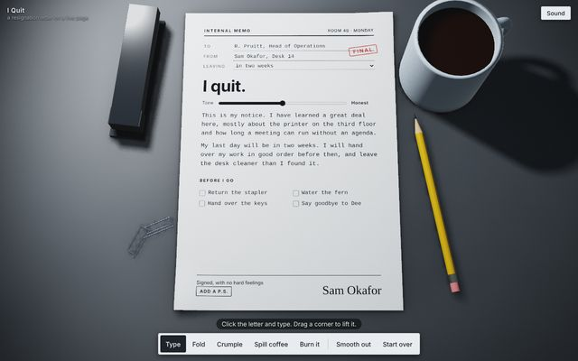
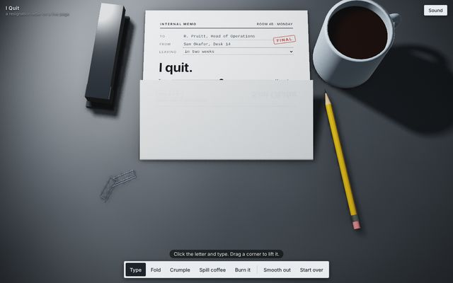
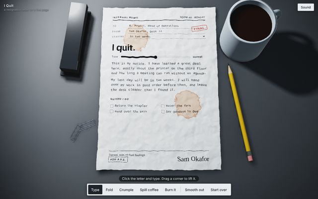
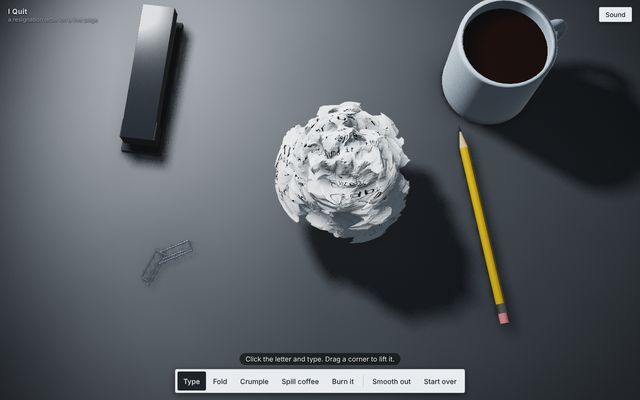
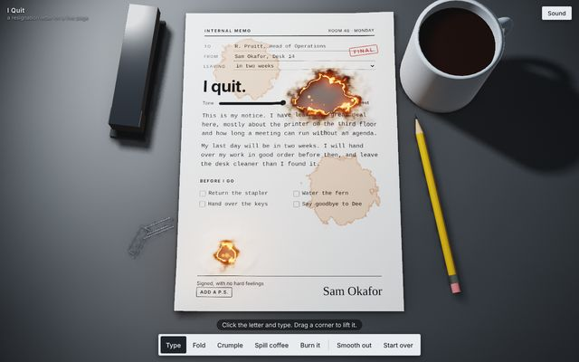
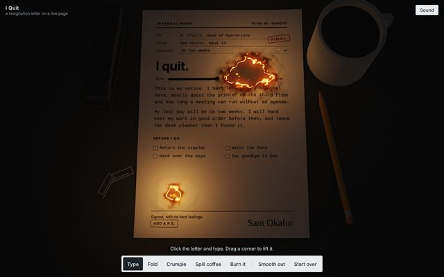
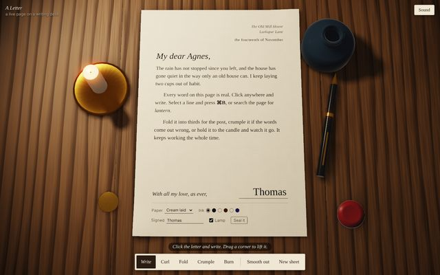
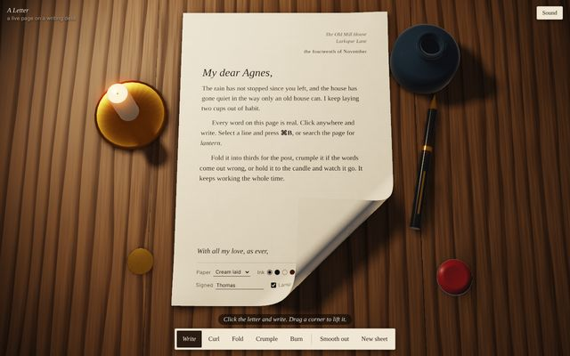
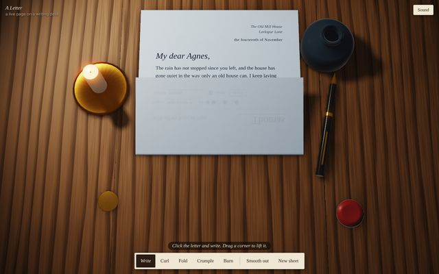
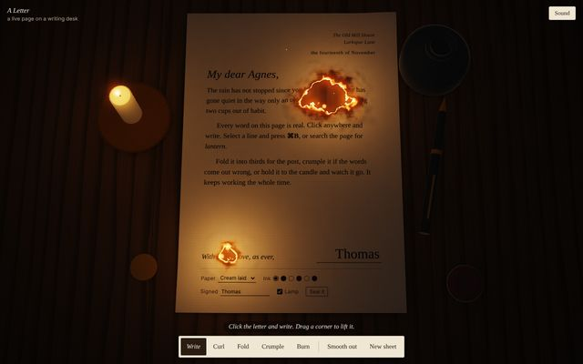

작업 흐름
- 입력
- 주제 한 줄 (연애편지, 보물 지도, 시험지, 사직서, 레시피 카드 …)
- 브리프
- 문서의 HTML과 살아 있는 동작, 종이 · 잉크, 책상 · 램프 · 소품, 주제에 맞는 행동
- 페이지
PaperDesk.create({…})설정 하나와 문서 DOM 코드- 검사
- 공통 HTML-in-Canvas 검사와 행동별 수치 검사, 스틸 채점
- 출력
index.html+lib/한 폴더 (오프라인 · Claude 아티팩트), 스틸
node scripts/check.mjs examples/resignation-letter/index.html
node scripts/still.mjs examples/resignation-letter/index.html --out out --act "idle;fold;crumple;burn,stain"
node scripts/new-page.mjs ../my-desk
node scripts/check.mjs ../my-desk/index.html요구 사항: Node, Playwright Chromium (스크립트가 CanvasDrawElement 플래그를 켬). 네트워크 · npm 설치 불필요. 단계별 순서는 SKILL.md에 있습니다.
샘플
예제와 템플릿을 HTML-in-Canvas를 켠 Chromium에서 상태별로 찍은 스틸입니다. 카드를 누르면 그 페이지의 라이브 데모가 열립니다.
책상 위 종이 한 장 예제 6 · 템플릿 4
같은 엔진, 다른 주제: 사무실의 사직서와 서재의 편지.

예제 · I QuitI Quit · 처음 화면
흰 복사지 메모 · 회색 데스크 · 커피 머그와 스테이플러

예제 · I Quit봉투용 접기
아래 3분의 1을 접어 올린 종이 · 뒷면에 비치는 잉크

예제 · I Quit커피 얼룩
쏟은 커피의 번진 얼룩과 마른 테두리 · 구겼다 편 주름

예제 · I Quit구기기
누르고 있는 동안 공처럼 뭉쳐진 종이와 그림자

예제 · I Quit불태우기
노이즈를 따라 번지는 불길 · 빛나는 가장자리 · 그을음과 구멍

예제 · I Quit램프를 끈 밤
불길만이 종이와 책상을 비추는 장면

템플릿 · 편지시작 템플릿 · 편지
크림색 레이드지 · 호두나무 책상 · 잉크병, 만년필, 촛불

템플릿 · 편지모서리 들어 올리기
원통을 따라 말리는 모서리와 종이 뒷면

템플릿 · 편지항공 우편지 · 접기
종이 선택을 바꾼 파란 항공 우편지와 접힌 아랫단

템플릿 · 편지촛불과 불길
램프를 끄고 촛불과 타는 종이만 남은 밤
실제 작품
이 레포에서 만든 예제와, 스킬의 출처인 원본 데모입니다.
I Quit · 사직서주제를 받아 새로 만든 예제 · 라이브 데모paper-desk/demo/examples/resignation-letter/
원본 · The Paper DeskFelix Rieseberg의 HTML-in-Canvas 데모claude.ai/artifact/BKGBk584…
HTML-in-Canvas 데모 페이지15개 데모 모음claude.ai/artifact/7cCNqKnoFSoib9SuNLB3vk
X 게시물「All hail the weird web」x.com/felixrieseberg/status/2122036839238492493
링크
- SKILL.md 워크플로
- 폴더 lib · scripts · references · templates · examples
- README.md 빠른 시작
- references/BRIEF.md 주제 → 브리프, 스틸 검토 기준
- references/LOOK.md 원본 데모 관찰 기록
- references/ENGINE.md 엔진 API · 설정 · 종이 · 책상 · 소품 추가
- references/HIC.md HTML-in-Canvas 공통 노트
- references/LESSONS.md 겪은 문제와 해결